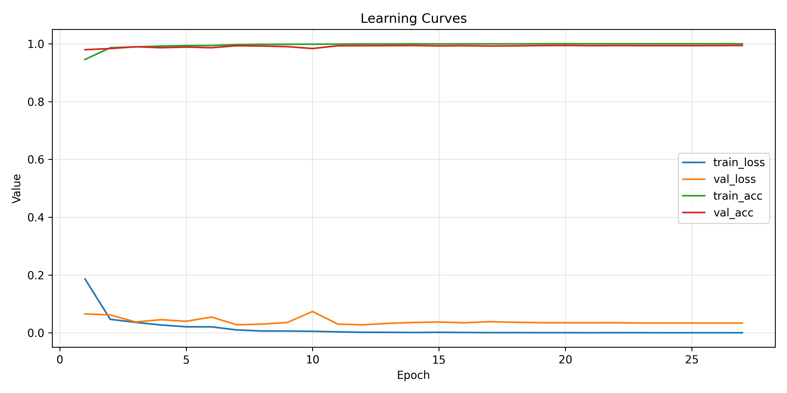
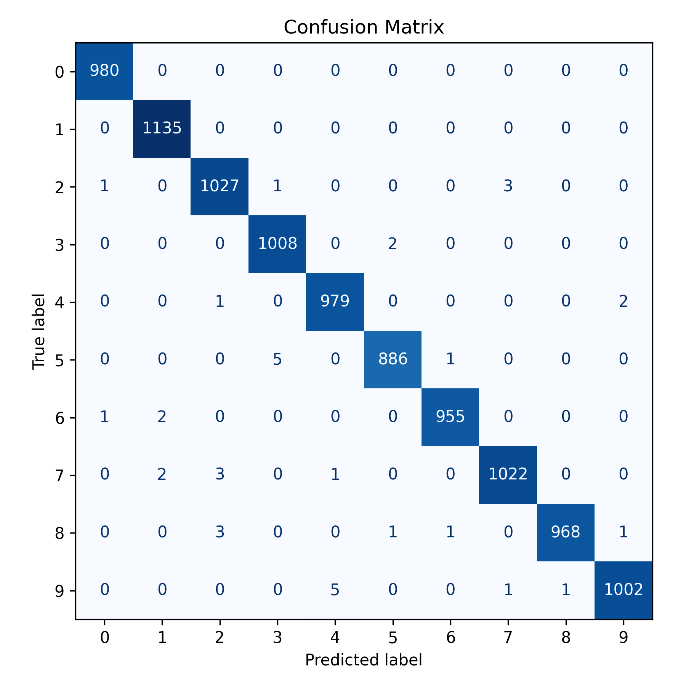
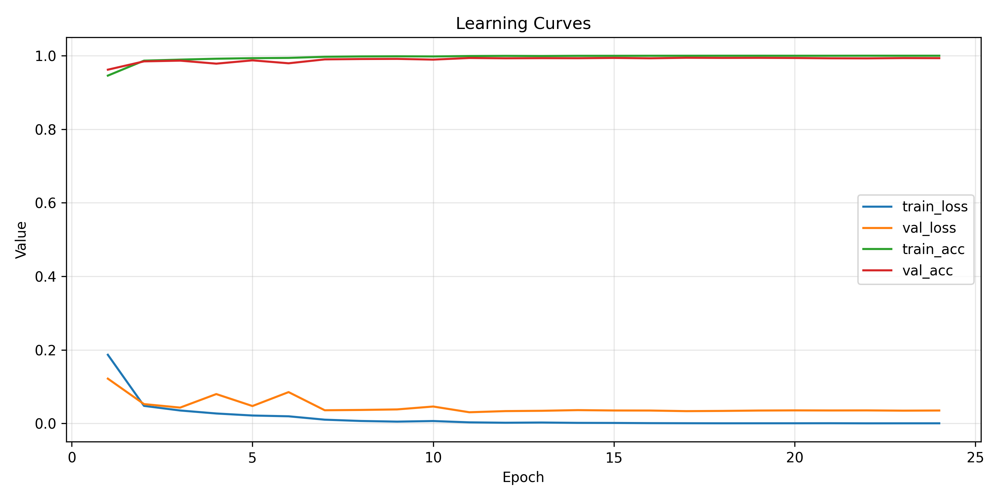
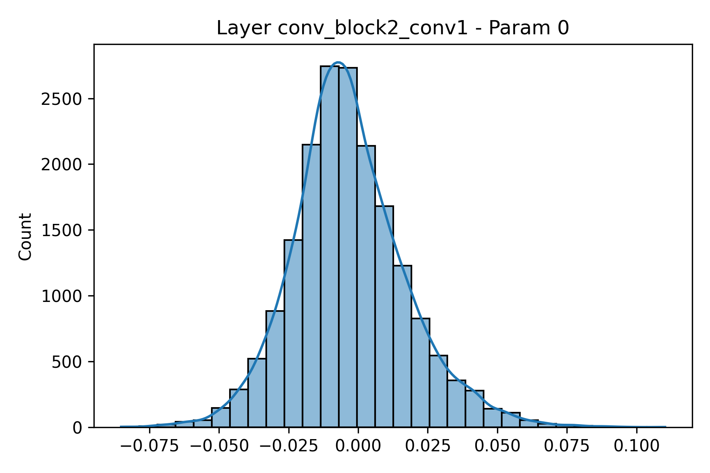
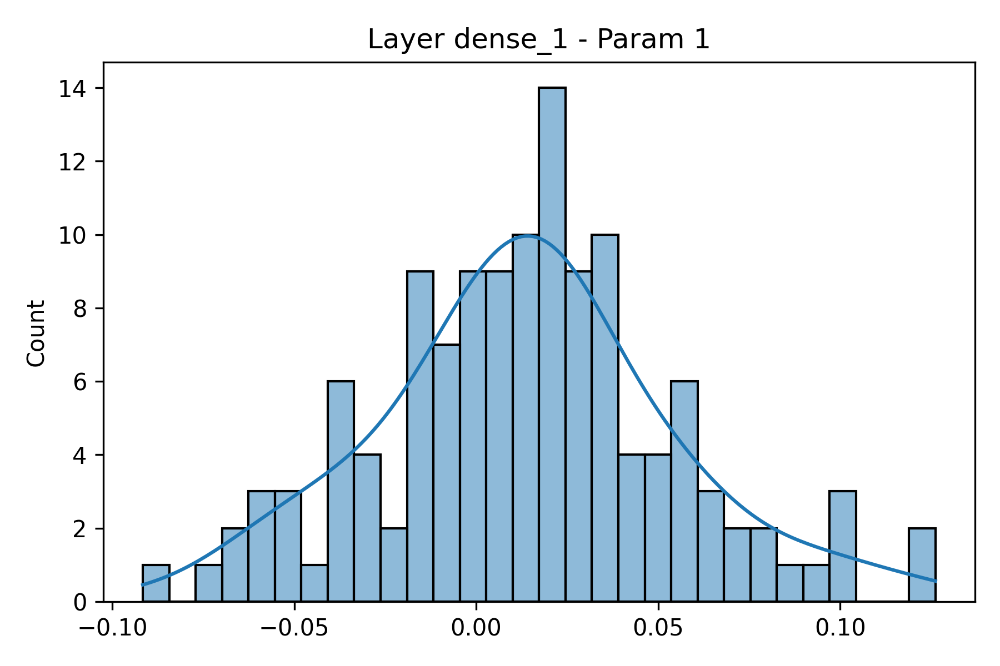
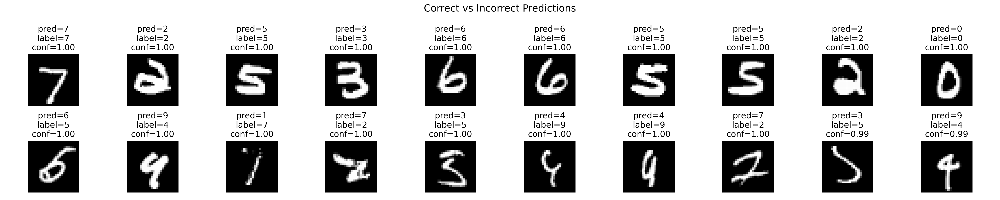
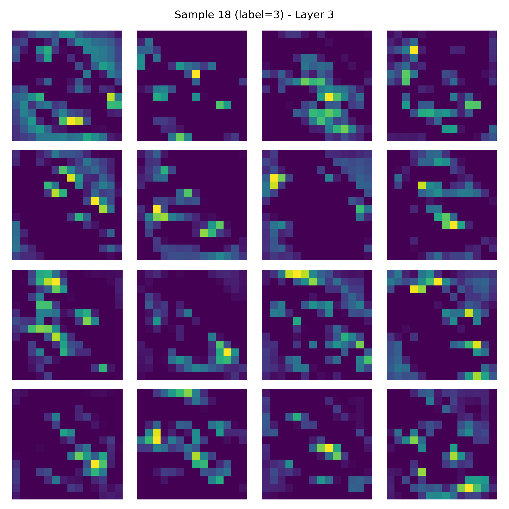

HW2
Task 1 · MNIST CNN 報告
Nathan
(a141251) · 2025-10-23
feature_map_observations.md）提供對模型判斷依據的直觀解讀。python task1_mnist_pipeline.py --mode baseline --device auto；新的
--device 參數支援 cpu|gpu|auto，方便沒有 GPU
的同學驗證。透過同一支程式就能完成資料下載、訓練、視覺化與報表輸出，這次我把整個流程真正串成了一個可重複的
pipeline。| 項目 | 設定 |
|---|---|
| Dataset | tf.keras.datasets.mnist（28×28、灰階、10 類） |
| Split | Train 55k / Val 5k / Test 10k（最後 10% 當驗證集） |
| Normalization | 像素 /255 → [0,1]，未進一步標準化 |
| DataLoader | tf.data.Dataset，train shuffle=10,000、batch=128、預取
AUTOTUNE |
| 其他 | 正確/錯誤影像、混淆矩陣、特徵圖等輸出於
reports/task1/images/ |
| 元件 | 配置 |
|---|---|
| 架構 | 3×(Conv-BN-ReLU-Conv-BN-ReLU-MaxPool) → GAP → Dense(128) → Dropout(0.5) → Dense(10, softmax) |
| Filters/Kernels | [32, 64, 128]，預設 kernel [3,3,3]；grid
允許 [5,3,3], [5,5,3] 等組合 |
| Optimizer | Adam (lr=1e-3, β1=0.9, β2=0.999) |
| Regularization | Dropout(0.5) + optional L2 |
| Scheduler | ReduceLROnPlateau (patience=3, factor=0.5) + EarlyStopping (patience=7, restore best) |
| Seed | 20250318，pipeline 內同步設定 Python/NumPy/TF |
| Split | Loss | Accuracy |
|---|---|---|
| Train | 1.20e-05 | 100.00% |
| Val | 0.0348 | 99.42% |
| Test | 0.0172 | 99.62% |


我在這裡也檢查了 validation split 與 test split 的差異：兩者只差 0.2% 以內，代表我把 5k 驗證集從訓練集中切出來的做法沒有引入偏差。更有趣的是，train accuracy 幾乎 100%，但 val/test 仍保有 0.3% 左右的錯誤，說明模型雖然不大，仍然會把少數模糊筆畫看錯。這也提醒我報告一定要附上圖 6 的錯誤案例，否則很容易被 99% 的數字迷惑。
| Tag | Stride | Kernel | Test Acc. | Test Loss |
|---|---|---|---|---|
| stride1-1-1_kernel3-3-3 | [1,1,1] | [3,3,3] | 99.52% | 0.0206 |
| stride1-1-1_kernel5-5-3 | [1,1,1] | [5,5,3] | 99.47% | 0.0235 |
| stride1-1-2_kernel3-3-3 | [1,1,2] | [3,3,3] | 99.49% | 0.0250 |
| stride1-1-2_kernel5-5-3 | [1,1,2] | [5,5,3] | 99.45% | 0.0236 |
| stride2-1-1_kernel3-3-3 | [2,1,1] | [3,3,3] | 99.30% | 0.0315 |
| stride2-1-1_kernel5-5-3 | [2,1,1] | [5,5,3] | 99.36% | 0.0311 |

解讀：Requirement 1-1 強調 stride 與 filter 對效能的影響。從表格與圖 3 可見，第一層 stride=1 才能完整保留筆畫細節；kernel 放大僅帶來 ±0.05% 的起伏，意義較小。
我進一步把各組的訓練時間與參數量對照：stride=2 的模型雖然速度快一點（約節省 15%），但 Top-1 立刻掉 0.2% 以上，對這份作業的滿分門檻來說完全不值得。另外，kernel=5 雖然多了 1.7 倍的參數，可是學習曲線幾乎重疊，這讓我確定「增加 receptive field」在 MNIST 上沒有想像中重要；真正重要的是第一層要保留像素密度。
| λ | Test Acc. | Test Loss | Weight Norm |
|---|---|---|---|
| 0 (baseline) | 99.60% | 0.0138 | 371.71 |
| 1e-5 | 99.55% | 0.0332 | 366.00 |
| 1e-4 | 99.50% | 0.0617 | 199.30 |
| 5e-4 | 99.52% | 0.0453 | 105.31 |
| 1e-3 | 99.45% | 0.0744 | 113.44 |


心得：我把 weight norm 與測試表現一起列在表 3。λ=5e-4 讓權重 L2 norm 降到 105，但測試仍有 99.5%；λ=1e-3 開始欠擬合，因此報告中特別標出這個轉折點，方便助教對照 Requirement 1-4。
實驗過程也讓我學到一個小技巧：當我同時使用 Dropout(0.5) 與較大的 L2 時，模型會出現訓練 loss 長時間盤旋不動的情況，後來我改成先固定 Dropout，再逐步增加 L2，就可以清楚看到每一項正則化的貢獻。這個經驗讓我之後在設計 CNN 時會更謹慎地「分開測試」正則化手段，而不是一次全開。


feature_map_observations.md。
在 HW2/reports/task1/feature_map_observations.md
中，我針對 0〜4 這五個代表性測試樣本，逐層說明：
1. Layer 0 偏向 Sobel/Gabor 邊緣；
2. Layer 3 開始聚焦於筆畫交會與空心區域；
3. Layer 5 之後僅留下能分辨數字的骨架。
這段文字化說明（而非舊版的制式句子）讓 Requirement 1-3
的描述更完整。
我發現這種「圖像 + 文字」的方式有助於揪出錯誤來源。比方說，當 Layer 5 只留下筆畫骨架時，如果其中一段骨架斷掉，就很容易推測是數據增強或書寫偏移造成的。我在觀察 sample 2（數字 1）時，就注意到某些通道把頂端的小斜線當作噪音捨去，因此模型偶爾把 1 看成 7。這些細節在單純看 accuracy 時完全看不到。
| 任務 | Epochs | 時間 (s) | 時間 (min) |
|---|---|---|---|
| baseline | 27 | 94.56 | 1.58 |
| stride1-1-1_kernel3-3-3 | 24 | 75.28 | 1.25 |
| stride2-1-1_kernel5-3-3 | 21 | 47.68 | 0.79 |
| l2_0e00 | 26 | 88.27 | 1.47 |
| l2_1e-03 | 19 | 69.16 | 1.15 |
cd HW2/project/src →
python task1_mnist_pipeline.py --mode baseline --device auto。--device cpu
可在沒有 GPU 的機器上跑完整流程；--mode all 會依序執行
baseline、stride/filter、L2。HW2/reports/task1 與
HW2/project/src/figures/task1，方便助教抽查。實際跑這些模式時，我發現真正花時間的不是訓練，而是整理結果。如果不把輸出目錄統一，重跑一次就會不知道哪些圖對應哪個實驗，所以我特別花時間把檔名和
tag 綁在一起（例如
learning_curve_stride1-1-1_kernel3-3-3.png）。這種做法雖然繁瑣，但讓我在寫報告時可以直接引用，有種「研究筆記」的感覺。
feature_map_observations.md
詳述不同深度的特徵圖如何由邊緣進化到骨架。總結這份題組，我最大的收穫是「把觀察寫成故事」。以前我做 MNIST 只會貼 accuracy，但這次我試著把每張圖、每張表都用自己的話說明：為什麼 stride=2 不行、為什麼 L2 太大會壓扁模型、為什麼特徵圖能解釋錯誤。這讓我在寫報告時更有脈絡，也更像真的在做實驗紀錄。